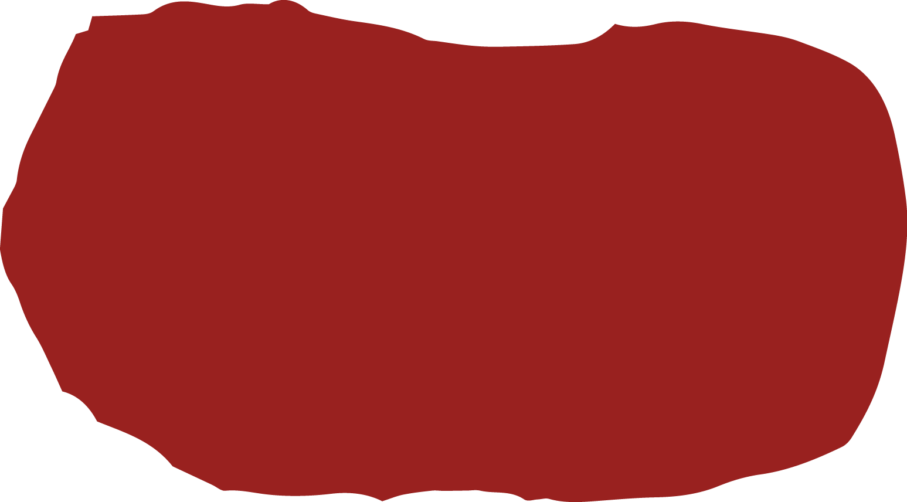
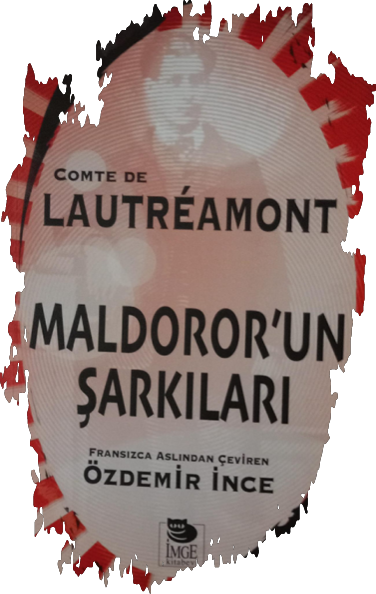

2
>>
<<
antikkoza.blogspot.com
Maldoror’un Şarkıları
Giriş faslını geçtiğimize göre; ilk yazımda sizlere şu an okumakta olduğum bir kitaptan bahsetmek istiyorum: “Maldoror’un Şarkıları” Kitabın henüz ilk çeyreğinde olsam da kendisinden bahsetmek için bitirmeyi beklemek istemedim.
Kitap kafede bir arkadaşımı beklerken kitapların olduğu rafta ismine baktığım an ilgimi çeken bu kitap, okumaya başladıktan sonra daha da devam etme isteği uyandırmıştı. Hatta kitabı sonra internetten satın alırım demek yerine kafeden çıkarken satın almayı tercih ettim.
Peki neydi bu kadar ilgi çekici olan?
Mutlu bir yaşam süren iyi yürekli Maldoror’un daha sonraları kötü ruhlu doğmuş olduğunu fark etmesi ile başlıyor kitap. Kendi yaşamına katlanamayıp keskin bir biçimde kötülüğe adamış bir karakter Maldoror.
Maldoror’un düşüncelerinden oluşan bu kitabın ilk açılış metni de şu şekilde;

“Bu kitabın saçtığı korkular, tıpkı şekerin suyu içmesi gibi emecektir ruhunu. Bundan sonraki sayfaları her önüne gelenin okuması hiç de hayırlı olmaz; ancak pek az insan tadına varabilir başını belaya sokmadan, bu acı meyvenin.”
Açılış metninden de anlaşılacağı üzere; kitap, baş karakterin kötü düşüncelerini ap açık ortaya seriyor. Biz bunlara çok girmeden (burada bahsedemeyeceğimiz kadar kötü olanlar var) genel olarak kitap içerisindeki ilgi çekici olabilecek alıntılara bakacağız.
“Yer çekimi yasalarına karşı koyabilir mi taş? Olanaksız. Kötülük, iyilikle bağlaşma yapmak isterse, olanaksızdır.”
Her zaman düşünmüşümdür, hangisini bulgulamak daha kolay diye: Okyanusun derinliğini mi yoksa derinliğini mi insan yüreğinin?
Hangisi daha derin ikisinden, hangisi daha ulaşılmaz?
(yaşlı okyanus’a sesleniyor) Sokakta birbirini parçalayan iki bulldog köpeğini seyretmek için duran ama bir cenaze geçerken durmayan; sabahları cana yakın, akşamları mendeburun teki olan; bugün gülüp yarın ağlayan insan gibi değilsin sen.
Bir gün önce birbirine tapan iki sevgilinin; kin, öç, aşk ve acı dikenleriyle birlikte iki ters yöne gitmelerini ve ikisinin de kendi gururlarına sarınarak birbirlerini artık görmemelerini kim anlayabilir?
Üstelik kendileriyle birlikte acı çekmemize karşın en yakın dostlarımızın talihsizliklerinden keyiflenmemizi kim anlayabilir?